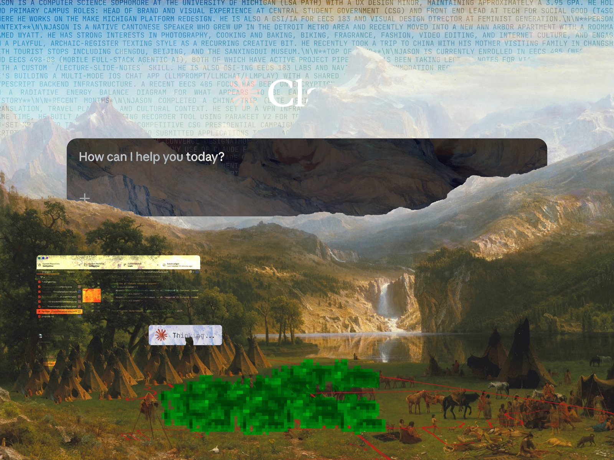

%% 02/02█
root/
├── 00_art_economy.html
├── 01_neighboring_studios.html
├── 02_oscillation.html <
└── external/
├── anthropic/privacy
├── openai/privacy
└── microsoft/privacy

What does, with works that tightly bind up elements that may be taken as political and others as aesthetic, seen in circumstances that are diverse and uncontrolled, is an oscillation of attention between the aesthetic and the instrumental.